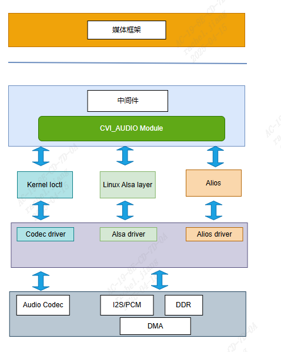
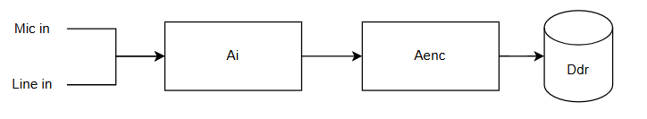
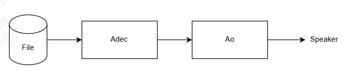
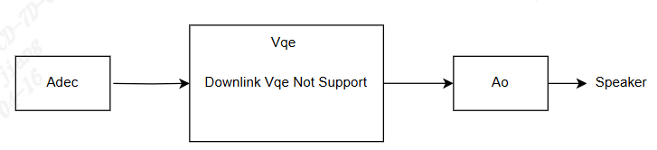
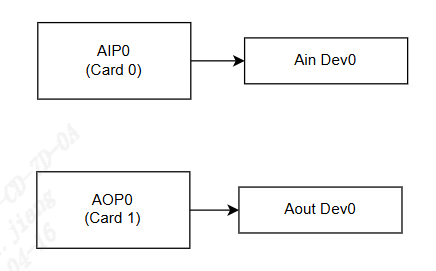
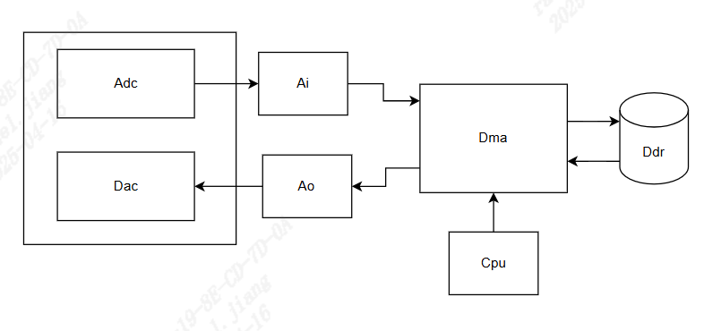
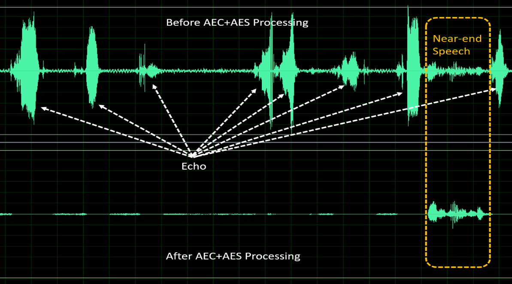

10.2. Design Overview¶
10.2.1. System Architecture¶
{kind=link}

ifonFigurethe, forshouldnameandinPlease refer to10.1.2, thisprovideandAudioModule(audio input module, audio output module, audio encoding module, audio decoding module, voice quality enhancement module, resampling)toMiddlewaremultiplebodylayerInterfaceofone, toonresponsible forwithapplication layerorcustomerlayerAPIforconnect, usercanthrough (CVI_AI_, CVI_AO_, CVI_ADE C_, CVI_AENC_Relatedbeforeetc.) numbertounderControlcorrespondingAudiogroupitem, application layerorcustomerlayer(Application/Customize Layer)ifneed toAudioAPIInterface, See alsothisDocumentation10.3: API Referenceperform, ifneed toRelatedAPICall, See alsoSDKin cvi_sample_audio.c inexamplethisAudioModule(underFigure)Useorder.

CVI_AUDIOtounderforconnectLinuxinlayer(Kernel Layer)Relateddriverprogram, throughLinux standardaudiobody(ALSA: Advanced Linux Sound Architecture), implementthisaudio input and outputFunction, thereforecan, userCallcvi_audio_xxx/ cvi_axx_xx(ex. cvi_adec_xxx) APItimeinternalthisandMinimumAudioUnitisFrame(thisintheaudio frame, audioFrameallrefers toAudio Frame), Documentationinaudio frameUnitissamplingpointnumber(1 Frame = numbers of samples), whilenotusingbits(bytes)calculate. FrameSizeRange, innotUsespeechaudio(VQE)Moduleunder, canSet160/320/480samplingpointisaudio frameSize(pleaseexceeds512). inUseVQEStatusunder, mustSetaudio frameSizeMinimumUnitis160samplingpointtimesnumber, thisMethodisiswork withinternalVQEModuleset.
For Userwhile, Audio CodecFunctionorishasRelateddebugRequirements, thisFunctionallthroughlibcvi_audio, libcvi_xxx Relatedsofileimplement, whilenotwillconnectcallIOCTLControlinlayer, withensuresysteminternalresourceallocatestabilityandcanness.
{kind=link}

onFigureDescriptionAudio inputandEncodingrelationship, AENCUseRISC-VEncodingnotthroughinlayerwillBitstreamstoragetoDDRin, andbycaptureend(Supportmicrophonecaptureandspeechcapture)toEncodingendsequentiallyEnable. inEnableAudio Input, AENCModuletime, internalAPIParameterSetneed toonecause(Sample rate, audio frameSize, Channelnumber), otherwiseEncodingafterGetAudioabnormal.
{kind=link}

onFigureDescriptionAudiodecodingandOutputrelationship, Usercanconnectinpcm/raw rawaudiofiletostorageDeviceinandcallADEC/Audio Output APIplayback, andsequentiallybyDecodingendtoOutputendEnable, ADECandAudio OutputParameterSetpleaseonecause, otherwiseplaybackAudioabnormal.

onFigureDescriptionVQEbeforeafterrelationship, AudiocaptureafterandEncodingbefore, UsercanthroughVQERelatedAPI(See10-3)EnableAEC/ANR/AGCFunction, thistimeaudio frameUnitneed toSetis160timesnumber, OperationfrequencySupport8Khz/16Khz.
{kind=link}

VQEincludingbeforeendVQE(Figure10-5), andonFigureDescriptionplaybackendVQE(afterendVQE), beforeNot supportedafterendVQE.
10.2.2. Audio Input and Output¶
10.2.2.1. Audio Interfaces and Audio Input, Audio OutputDevice¶
AudioInterfacetwo, Input(Audio Input)andOutput(Audio Output)Interface, eachresponsible foraudioandplayback. with Audio Codec forconnectandresponsible forAudioInterfaceInputFunctionsingle, ofis Audio Input Device; Audio Output Devicethenisresponsible forAudioInterfaceOutputFunction, according to thisInterfaceSupportFunction, with Audio Input Deviceand Audio Output Devicecreatemap.
Audio inputOutputInterfaceis AIO (Audio Input/Output) Interface, used to and Audio Codec forconnect, completeaudioandplayback. AIO InterfaceistwoType: onlySupportInputoronlySupportOutput, When isInputTypetime, is AIP, When isOutputTypetime, is AOP. AIP0 onlySupportAudiosignalInput, then AIP0 is AiDev0; AOP0 onlySupportAudiosignalOutput, AOP0 is AoDev0.
Audio inputInterface(Audio Input)SupportPCMandI2SInput, OutputLinuxinstandardforconnectALSA PCM device, CvitekSupportonegrouppresetInputandOutput, If withLinux ALSA architectureto, correspondingDevicecaniscard 0, card 1, itsrelationshipas followsFigure:

AIP0onlycanSupportInput, AOP0onlycanSupportAudio output, inInputandOutputforconnectstatusunder, For example: real-timerecordingandaudioorspeechtalk, thistimeAudio Input/Audio OutputDevicesamplingandbitsWidthneed tosame, ChannelCountmustonecause, Sample ratealsomustonecause. isshouldcustomizedproductRequirements, CvitekhasmultipletwogroupI2S, canproductorcustomerapplicationneed towillmultipletwogroupI2SmoreSetisAiDev(Input)forInterface, orisisAoDev(Output)forInterface.
10.2.2.2. Recording and Playback Principles¶
CVI_AUDIO API theprocessingaudio frameallisnumberaftersignal, whileactualincaptureendandplaybackendallismodesignal, numberandsignalisthroughAudio CodecperformConversion, Audio CodecthroughI2SorPCMtimingwillInputsignalsourceConversionandgiveAudio Input module is busy, same, Audio OutputendplaybacktimealsothroughAudio CodecwillnumberAudiowithI2SorPCMtimingperformDACConversionaftertoSpeakerSendsignal.
DatabyRISC-VControlDMAMemoryDDRinData, UsercallCVI_AUDIO APItimeonlyinorendforAudio Codecperformcall, withimplementCodecHardwarestandardwithstandardend, processinandnotwillandsignalcapture, NonemethodconnectforRISC-VUseDMAMethodperformmore, Audio CodecisOperationConversionuser, whileRISC-V/DMAthenisDatauser. (SeeunderFigure10-7)
{kind=link}

10.2.2.3. Audio Interface Timing¶
cvitekAudiotimingInterfaceSupportI2S, PCMtimingMode, andaccording to customizedprovidemultipleMethodwithAudio Codecforconnect, ProcessorHardwarespecificationSee alsoHardwareRelatedFile. Audio Input/Audio Output Controlclockwithsynchronizationtiming, userSee alsocvi_sample_audio.cinternalSAMPLE_COMM_AUDIO_Cfg Acodec API, insetAudio CodecorisexternalAudio CodectimingSetMethodwillhasthenotsame, butFor cvi_audio APIuserwhile, onlyneed toinAudio CodectimeverifykernelcanSupportandInitializeCodec. For audio frameSample rate, CvitekUseRISC-V softwaresampling, andnotwillwithmainclockhasconnectbinding. Audio Input DeviceUsemultiple channelsreuse I2S ReceiveModetime, standard I2S ProtocolonlyhasapproximatelyAudio Channelitem, Audio Input DeviceMaximumSupportapproximatelyAudio ChanneleachReceive 128bit AudioData, CodecdetailscontentpleaseSee10.4.4section.
10.2.2.4. resampling¶
audio frameresamplingSupportarbitrarytwonotsameSample rateConversion, mainiswith8kHztimesismain. resamplingSupportInputSample rateis: 8kHz, 11.025kHz, 16kHz, 22.05kHz, 24kHz, 32kHz, 44.1kHz, 48kHz; SupportOutputSample rateis: 8kHz, 11.025kHz, 16kHz, 22.05kHz, 24kHz, 32kHz, 44.1kHz, 48kHz. usermustNote, resamplingcanSupportprocessingsingleAudio Channel, dualAudio Channel. Audio Input resampling, thenresamplingInputSample ratewith Audio Input Device attributesConfigurationSample ratesame, resamplingOutputSample ratemustwith Audio Input Device attributesConfigurationSample ratenotsame; Audio Output resampling, thenresamplingOutputSample ratewith Audio Output Device attributesConfigurationSample rate same, resamplingInputSample ratemustwith Audio Output Device attributesConfigurationSample ratenotsame.
Audio Input-Audio Output DatatransmitMethodisSystem BindingMethod(system bind), Audio Input or Audio Output resamplingInvalid. userinuser-get modeStatusunder, Enable Audio Input resamplingFunction, thencanin CVI_AI_GetFrame GetDatawillGetforshouldresamplingData. Audio OutputIf EnableresamplingFunction, thenAudioDatainSendgive Audio Output before, need tofirstexecuteresamplingprocessing, processingcompleteafterthenSendgive Audio Output Channel(CVI_AO_SendFrame)perform playback.
correspondingAPIs:
CVI_Resampler_Create: Createandaudio resample.
CVI_Resampler_GetMaxOutputNum: according to Inputsamplepointnumber, toresamplingafterforshouldpointnumber.
CVI_Resampler_Process: throughthisAPI, inaudio framesamplenumber, perform actualresampling.
CVI_Resampler_Destroy: endresamplingflow.
10.2.2.5. Voice Quality Enhancement (VQE)¶
For speechsignalprocessingalgorithm, When near-endspeechsignaltofromfar-endechointerferenceorisnear-endnoiseinterferencetime, canusingVQEinalgorithmFunction, whileprovideheightspeechsignalquality. VQEprovidefoursolution, includingnessecho (AEC), nessechosuppression (AES), speechnoise reduction (NR) andautomatic gain control (AGC), algorithmcanSupport8kHzand16kHzSample rate, singleAudio Channel, 16bitssamplingLength. inconnectundertopagesurfacewillFunctionandtheUseParameter, If morePlease refer toAudioqualitydebugrefers to.
Parameter para_fun_config canControlAEC, AES, NRandAGCFunction. Parameter para_spk_fun_config canControlspeaker pathSSPalgorithmFunction, toUpVQE. eachbitsforshouldalgorithmFunctionas shown in the following table.
para_fun_config | Description |
|---|---|
Bit 0 | 0: CloseAEC 1: EnableAEC |
Bit 1 | 0: CloseAES 1: EnableAES |
bits2 | 0: CloseNR 1: EnableNR |
bits3 | 0: CloseAGC 1: EnableAGC |
bits4 | 0: CloseNotch Filter 1: EnableNotch Filter |
bits5 | 0: CloseDC Filter 1: EnableDC Filter |
bits6 | 0: CloseDG 1: EnableDG |
bits7 | 0: CloseDelay 1: EnableDelay |
para_spk_fun_config | Description (speaker path) |
|---|---|
Bit 0 | 0: CloseAGC 1: EnableAGC |
Bit 1 | 0: CloseEQ 1: EnableEQ |
VQE For Audio Input and Audio Output twopathsamepoint, through UpVQE and DnVQE twotoprocessingtwopathData, UpVQEincludingAEC, AES, NR, AGC. DnVQE Not currently supported.
correspondingParametercanReferenceTable cvi_comm_aio.h.
AGCDatastructureas follows:
CVI_S8 para_agc_max_gain; CVI_S8 para_agc_target_high; CVI_S8 para_agc_target_low; CVI_BOOL para_agc_vad_ena;; NRDatastructureas follows:
CVI_U16 para_nr_snr_coeff; CVI_U16 para_nr_init_sile_time; CVI_AI_SetTalkVqeAttr inAI_TALKVQE_CONFIG_S *pstVqeConfigParameter, Setu32OpenMasktodetermineEnableVQEFunction, AGC, NRMemberDescriptionpleaseSeeunderforshouldsection.
For exampleundertable:
pstAiVqeAttr.u32OpenMask | Description |
pstAiVqeAttr.u32OpenMask = AI_TALKVQE_MASK_AGC; | EnableAGC |
pstAiVqeAttr.u32OpenMask = AI_TALKVQE_MASK_ANR; | EnableNR |
pstAiVqeAttr.u32OpenMask = (AI_TALKVQE_MASK_ANR |AI_TALKVQE_MASK_AGC); | EnableNR, EnableAGC |
AEC/AES (Acoustic Echo Cancellation/Acoustic Echo Suppression)
anyfull-duplextalksystemarchitecturestorageinwithechointerference. echodevicecanthroughnear-endacousticpathcouplingmicrophoneloudspeakerdeviceOutputecho. usingtheprovidesolution, nessautoshouldfilterModule (AEC) nessechosuppressionModule (AES) canValidsuppressionecho, fromwhileprovideheightspeechtalkquality.
{kind=link}

Figure 10.1 AEC+AESperformance before and after processing¶
providethreeitemadjustableParameter, used to adjustAEC/AESperformance, is:
para_aec_filter_len: Adaptive filter length. According tonotsameprototypeechotailtimeadjustappropriatefilterLength. If selectLength, willcauseheightMIPSandpower consumption.
para_aes_std_thrd: residual echo detection threshold. valuesetlargertime, near-endspeechqualitybutresidual echomultiple. of, valuesetsmallertime, near-endspeechqualityworsebutresidual echoless.
para_aes_supp_coeff: residual echo suppression strength. valuesetlarger, forresidual echosuppressionlarger, butat the same timealsowillfornear-endspeechtomultipleaudio detailslost/.
AEC/AESParameter | Adjustable range | Description |
|---|---|---|
para_aec_filter_len | 1 - 13 | 8kHzSample rate: [1,13]corresponding[20ms,260ms] 16kHzSample rate: [1,13]corresponding[10ms,130ms] |
para_aes_std_thrd | 0 - 39 | 0: residual echo detection thresholdMinimum 39: residual echo detection thresholdMaximum |
para_aes_supp_coeff | 0 - 100 | 0: residual echo suppression strengthMinimum 100: residual echo suppression strengthMaximum |
NR (Noise Reduction)
NRModulecansuppressionareaaudio, For examplefanaudio, air conditioneraudio, engineaudio, white/pinknoise, …etc.etc.. withproprietaryspeechintelligentVoice Activity Detection (VAD) algorithm, NRcanspeechsignal, at the same timecanValidsuppressionnoise, fromwhileprovideheightspeechtalkquality.

Figure 10.2 NRperformance before and after processing¶
providethreeitemadjustableParameter, used to tuningNRperformance, is:
para_nr_init_sile_time: MutetimeLength. CODECelectricalwillgenerateNoneaudiosignal
para_nr_init_sile_time: canwillsignalSetMute.
para_nr_snr_coeff: signal-to-Noise. Ratio (SNR) tracking coefficient.
If Parametervaluelarger, thenNRwillhasheightnoise reductioncapability, butspeechsignalcancanwilldistortion.
, Parametervaluesmaller, thenNRwillsuppressionlessnoisesignal, butwillhasbetterspeechqualityperformance.
underTableistonotsameSNRenvironmentunder, thisParametercombinedadjustRange, ineachSNRcaseunder, Parametervaluelarger, forstationary noisesuppressionlarger.
NRParameter | Adjustable range | Description |
|---|---|---|
para_nr_init_sile_time | 0 - 250 | corresponding0sto5s, eachstep20ms |
Surrounding SNR Environment | adjustRange | Description |
|---|---|---|
Low | 0 - 3 | 0: innoise reductionsurfacenot 3: innoise reductionsurface |
Medium | 4 - 10 | 4: innoise reductionsurfacenot 10: innoise reductionsurface |
High | 11 - 20 | 11: innoise reductionsurfacenot 20: innoise reductionsurface |
AGC (Automatic Gain Control)
AGCModuleisonesignalprocessingFunction, canautomaticwillOutputleveladjusttopresetRange, withprovidemorecomfortable listening experience. If Inputsignallower than“Target Low”, thenAGCwillwillOutputlevelto“Target Low”adjust. onesurface, If Inputsignalhigher than“Target High”, thenAGCwillwillOutputlevelto“Target High”adjust.

Figure 10.3 Figure10-3: AGCadjustsignallevel¶

Figure 10.4 Figure10-4: AGCperformance before and after processing¶
providefouritemadjustableParameter, used to adjustAGCperformance, is:
para_agc_max_gain: thisParameterissignalcanbeMaximumgain.
para_agc_target_high: thisParameterisAGCwillwillgoreach“Target High”Horizontal. For higher than para_agc_target_high input signal; AGC converges it to para_agc_target_high.
para_agc_target_low: thisParameterisAGCwillwillgoreach“Target Low”Horizontal. For lower than para_agc_target_low input signal; AGC converges it to para_agc_target_low. If inreach para_agc_target_low beforealreadyreach para_agc_max_gain, thenAGConlywillconvergenceto para_agc_max_gain.
para_agc_vad_ena: Speech-activated AGCFunction. EnablethisFunctionandat the same timeEnableNRandAEC/AESFunctiontime, canmakeAGCnoiseandresidual echo, withGeteffective.
AGCParameter | Adjustable range | Description |
|---|---|---|
para_agc_max_gain | 0 - 6 | [0,6]forshouldMaximum providegainis[6dB,42dB], eachstepis6dB |
para_agc_target_high | 0 - 36 | 0to36corresponding0dBto-36dB |
para_agc_target_low | 0 - 72 | 0to36corresponding0dBto-72dB |
para_agc_vad_ena | 0 - 1 | 0: CloseSpeech-activated AGCFunction 1: EnableSpeech-activated AGCFunction |
10.2.3. Audio encodingwithDecoding¶
10.2.3.1. Audio Codec Flow¶
Cvitekaudio encoding and decodingSupportG711-A-law, G711-Mu-law, G726, ADPCM_IMA, withonencodingDecodingUseRISC-VsoftwareencodingDecoding. UsercanUsebind mode(BindMode)andthroughCVI_Aud_SYS_Bind, willAudio InputwithAENCBind, perform audio frameafterEncoding, canwillAudio OutputwithADECBindafter, perform ReceiveEncodingaudio frameafterDecodingprogram, willaudio frameisPCM/Rawsignal. If notUseBindMode(bind mode), whileUseuser get mode(UserGetMode), UsercanthroughCVI_AENC_SendFramewillactualsingleaudio framesendinEncodingprogramperform Encoding, RelativeshouldalsocanUseCVI_ADEC_GetFrame, perform singleaudio frameDecoding, pleaseNoteinUseUserGetModetime, UserIf Calldelay, thenhascancancauseinternalcacheblocking, causemakeFailureaudio frame.
10.2.3.2. Audio Codec Protocols¶
Audio encodingmainaudio frameDataConversion, CvitekSupportG.711, G.726, LDPCMRelatedEncoding, Encodingafteraudio frameDatasmaller, butspeechEncodingtohasCompression(lossy compression), audiowillhasthe, notsameEncodingUsebit rate/sample ratehasthenotsame, Userneed tothisEncodingProtocolandSetcorrespondingAPI, otherwisefunctionwillError.
Codec | Sampling Rate (KHZ) | Bit Rate (Kbps) | Playload (rawaudio frame) | Compress Rate (Compression) | MOS (audio) | Nominal Bandwidth (Kbps) |
|---|---|---|---|---|---|---|
G.711* | 8/16 | 64 | 160/320 | 1:2 | 4.1 | 87.2 |
G.726 | 8 | 16/24/32/40 | 160/320/480 | 1:4 | 3.85 | 47.2/55.2 |
ADPCM-IMA | 8 | 32 | 160/320/480 | 1:4 | 3.7 | 38.4 |
*G.711 includinga-law/mu-law
10.2.3.3. Voice Frame Structure¶
CvitekwithaudioFramestructureandnotextraHeader Files, internalcapture, playbackiswithaudio frameas the unit, whileeachaaudio frameallisRAW/PCMData, G711, G726, ADPCM FormatencodingDecoding, forshouldaudio framealsonotwillincreasemultiple, usermustthroughCVI_AUDIO_AENC_/CVI_AUDIO_ADEC_ RelatedAPIgoGetbeforecompilecodeaudio frameInformation. thismethodpointis, When userthroughget_frame API orisRelateddebug functiongoGetaudio frametime, canthat isthisaudio frameWhethercombinedforshouldcompilecodethen, whilenotneed tothengo, andcaninperformfile savingaftertocalculateendRelatedthirdsoftwareverificationcompilecoderesultWhethernormal.